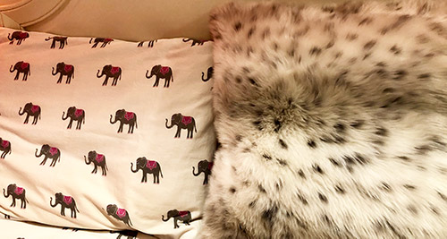

Discovering the Pillow
By Kayla Fernandes
Introduction
The object that I have decided to discover more about is the pillow. This is an object that I use every single day. The main place it has in my life is when I lay my head down to go to sleep. I rest my head on a pillow every night. The pillow helps support the head as you sleep. I first encountered this object when I was old enough to move into my “big” kid bed and it was safe to sleep with a pillow. I wonder how often this object harms babies and young children? However, before this age, I had seen a pillow and maybe occasionally used it but did not have my own. Based on my own experience I know there are different types of sleep pillows such as firm, soft, thick, thin, or even memory foam. With the use of different materials in the pillow, the price range can also greatly vary. What makes a pillow more expensive or cheaper? A sleeping pillow can be bought at a department store like Macy's Pillows or at Walmart Pillows. Looking at the tag on one of the pillows I use every night it said the shell was made in China and it was finished and filled in the USA. I was surprised some of the manufacturing was done in the USA.
Questions-
- Where are most pillows made?
- Who are the people who make the pillows?
- What are the living conditions and wages?
- How often do people buy new pillows?
- Is there a certain time frame when you should replace your pillow?
The Decorative Pillow
Now there is also another type of pillow than the sleep pillow; the decorative pillow. I have quite an obsession with decorative pillows. I have way too many of them scattered all over my room.
"I tend to enjoy changing the theme of my room often and have the mentality that a girl can never have too many pillows."
However, I wonder how many decorative pillows the average person has? The number of textures, sizes, colors, and shapes in decorative pillows makes everyone so different and unique. Some are fuzzy and soft whereas some have rhinestones and sayings. Typically decorative pillows are not comfortable to sleep on and are just for looks. The other thing with decorative pillows is that there are seasonal/holiday pillows as well. I probably did not encounter this type of pillow until I was older and more interested in decorating. Sometimes decorative pillows can be bought just as a cover and you can change it depending on what you like. This makes it so you have less actual pillows saving space. It definitely harms a person's bank account because decorative pillows can be quite expensive. Decorative pillows help provide a sense of warmth and aesthetic. Some of the questions I had with the sleeping pillow also apply to the decorative pillow: Where is it made? What are the working conditions? A few new questions are: What is the cost of manufacturing? What are the pillows made of? Below are pictures of the sleeping pillow and a decorative pillow.
